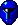

Robot spelers
Elke robot speler wordt gerepresenteerd door een ikoon wat de hoeveelheid
berekeningen representeerd die de robot uitvoerd, dus grofweg hoe slim de
robot is. Sommige robots hebben hun eigen ikonen. Je zult dan naar hun
rang moeten kijken om erachter de komen hoe goed ze zijn.
 Erg Domme Robots
Erg Domme Robots
-
Deze robots doen maar wat, het zijn erg makkelijke tegenstanders.
 Domme Robots
Domme Robots
- Deze robots volgens allerlei strategieen die allemaal niet echt
goed werken.
 Normale Robots
Normale Robots
-
Deze robots lijken allemaal op elkaar, vooral in het opzicht dat ze zo
snel mogelijk proberen het bord over te steken. Dit is een verrassend
goede tactiek. Ze gebruiken dezelfde primaire informatie als domme en
slimme robots.
-  Slimme Robots
- Deze robots gebruiken succesvolle strategieen welke zijn gebaseerd
op de ervaring van de normale robots.
 Denkende Robots
Denkende Robots
- Deze robots gebruiken klassieke kunstmatige intelligentie-technieken
zoals vooruitrekenen en bordevaluatie in een poging goede zetten te
kiezen. Het rekenkundige vermogen wat ze nodig hebben staan echter niet
in verhouding tot hun mogelijkheid tot het kiezen van zetten.
 Wijze Robots
Wijze Robots
- Deze robots berekenen meer dan elke andere robot. Ze spelen
dan ook beter dan elke andere.
Dit type robot zal een goede menselijke speler onder druk zetten.
Index